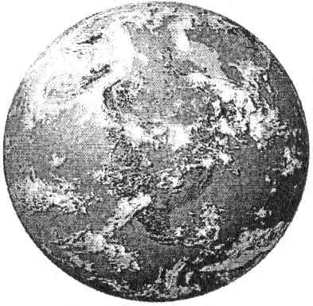

Celse Yeri: Portland, Oregon Ağustos 2009

Portland, Oregon - Ağustos 2009
Merhaba, sevgili varlıklar, ben Manyetik Hizmet’ten Kryon. Biz, özgür seçimin kurallarını geçersiz kılmayı, gerçekten burada olduğumuzu kanıtlayacak bir biçimde kendimizi size göstermeyi çok isterdik. Ama bu özgür seçim gezegeninde o kapıyı bize açması gerekenler sîzlersiniz. Biz sizin yaşamlarınızda melekler olarak durur, tüm yaşamınız süresince sizinle birlikte yürürüz. Bu dünyada doğduğunuz anda, melekler doğduğunuz yeri kuşatır ve son nefesinizi verene dek sizinle birlikte kalırlar. O ilk haftalarda, siz bir bebeğin fal taşı gibi açılmış gözlerle meleklere baktığını görebilirsiniz! Bebek, daha iki, üç haftalıkken bile, onları işaret eder, hatta bazen onlara gülümser; çünkü bebekler bizi görürler. Ana rahminden yeni çıkmış olarak, alışmanız gereken çok şeyin olduğu, çok fazla değişimin olduğu ve meleklerin varlığının sizi teselli edip rahatlattığı o ilk günlerde hepiniz bizi gerçekten görürdünüz. Bunu hatırlıyor musunuz? Sonra yavaş yavaş o realite sizden uzaklaşıp kaybolur. Yavaş yavaş. Ama birçoğunuz, bir bebeğin öylece boşluğa baktığını ve gördüğü şeyden hoşnut olduğunu görmüşsünüzdür.
Şu anda sizinle birlikte olanlar da aynı meleklerdir. Onların yaşlanmadıklarını biliyor musunuz? Ama siz yaşlanırsınız. Onlar tüm yaşamlarınızda sizinle birlikteydiler; onlar yanınızda yürürler; sizinle birlikte geldiler, sizinle birlikte gidecekler. Ve eğer onlarla hiç konuşmazsanız, onlar da size hiçbir şey söylemeyeceklerdir. Çünkü anlaşma budur. Ama sevgili İnsanlar, eğer niyetinizle bize küçük bir yer açsaydınız ve “Sevgili Tanrım, bana sevildiğimi göster” deseydiniz, bent kapağını açmış olurdunuz. Çünkü o zaman sizin yaşamlarınıza bize izin verdiğiniz ölçüde girebiliriz. O zaman size istediğiniz şeyi verebiliriz: Eşzamanlılığı başlatabiliriz, size öğretmenlik yapabiliriz, elinizi tutabilir ve kendinizi çok yalnız hissetmenizi önleyebiliriz. O zaman sizi öyle bir dereceye kadar doldururuz ki, siz hastalıkla, yaşlanmayla ve dramla ilgilenmez, bu konuda kaygılanmazsınız. Ve göreceğiniz tüm şey, gerçek kimliğinizin vaadi olur. Başladığımız günden itibaren bu hep böyle olmuştur; çünkü bizim işimiz, sizin bizim bir parçamız olduğunuzu fark etmenizi sağlamaktır.
Mesaj Kutsaldır
Hâlâ bu süreci, bir medyum kanalıyla mesaj verme sürecini merak edenler vardır. Bu süreç, medyum temiz olduğunda en iyi şekilde işler. O, tekil bir İnsan olma eğilimi bir kenara bırakıldığında işler. Onun yolu budur ve daima bu olmuştur. Bu dünyadaki tüm kutsal metinler İnsanlar tarafından yazılmıştır. Bunun nasıl işlediğine bir bak, sevgili İnsan, çünkü seni teselli eden, Tanrı’dan geldiğini söylediğin o sözlerde bulacağın tüm kehanet ve tüm iyi şeyler İnsan kanalıyla gelmiştir. Şimdi yine, aynı kutsal ve kadim biçimde verilecek olan bir bilgiyle karşınıza geldik.
Bu akşam bu salonda bulunanlara verilen bilgi, sizin deyiminizle gerçek zamanda verilmektedir. Bu bilgiyi, burada oturanların gelecek dedikleri zamanda okuyanlar bunun nasıl işlediğini bilirler. Ancak, bu lineer zaman yolu bizim realitemiz değildir. Biz kuantumuz, dolayısıyla, bunun karşımızda oturanlar için henüz gerçekleşmemiş olmasına rağmen, bu sayfayı okumakta olanların potansiyelini görebiliriz. Bu şu anlama gelir ki, bu mesaj, tümüyle tarih hakkında olmasına rağmen, sizin için hâlâ kişisel bir mesajdır ve sizi onun kadim gerçeğini hissetmeye davet ediyoruz, çünkü biz bu kitabı kimlerin (Lemuryalılar’ın) okuduklarını biliyoruz.
Şimdi vereceğim tüm bilgi bu celseleri yaptığımız son yirmi yıl içinde verilmişti. Ama ilk kez bu özeti veriyoruz, çünkü artık bu konuları -sadelik ve berraklık elde etmek için- özetlemeye başlıyoruz, ki böylece onlar daha anlaşılır ve sizin realitenizde daha mevcut olmaya başlasınlar.
Bugünkü Öğretinin Bilgisi
Bugün size partnerim kanalıyla bilgi aktarırken, buradaki tüm kalplerde üçüncü dil yer alacaktır. Sizin geleceğinizde bu bilgiyi okuyanların bazıları da bu üçüncü dilden etkileneceklerdir. Çünkü biz bu sözleri okuyanların kimler olduklarını biliyoruz, çünkü sizi orada görüyoruz. Biz sizin yüzlerinizi ve sahip olduğunuz ışığı da görüyoruz. Özgür seçimle bu mesajın bugün yaşamlarınıza girmesine izin vermeniz bir rastlantı değildir.
Bugün sunulan bilginin birçok kişiye aktarılmasına izin verin. Şimdi vereceğimiz bilgi, DNA’nın başlangıcından bugüne dek olan geçmişiyle ilgilidir. Biz onun bu dünyada meydana geliş biçiminden, işleyiş biçiminden, nasıl değiştiğinden ve bu yeni enerjide -onu tasarlandığı gibi kullanabilmeniz için- onunla ilgili bilmeniz gereken şeylerden söz edeceğiz. İlk önce DNA’ nın ve insanlığın tarihini anlatarak başlayacağız.
DNA Hakkındaki Tüm Bunlar Nedir?
DNA sizin kimliğinizin hem fiziksel hem de spiritüel olarak temel unsurudur. Eğer Yüksek Benliğin bulunduğu bir yer seçmeniz gerekseydi, o DNA’nız olurdu. Akaşik Kayıt, yani olmuş olduğunuz her şeyin kaydedilmiş-plânı DNA’dadır. Tüm geçmiş yaşamlarınız, tüm spiritüel tekâmülünüz, binlerce yıllık yaşamlarınızdaki tüm yetenekleriniz oradadır. Bu dünyaya birlikte geldiğiniz karma ve geçmişte hallettiğiniz birçok karma oradadır. O aydınlanmış eylemin kaydı oradadır.
Sizin İnsan spiritüel tarihiniz orada, kuantum bölümlerde yazılıdır. Bazılarınız bunu geçmişte Lemuryalı olduğunuzu bilecek derecede anlarsınız. Eğer böyle hissediyorsanız, içinizde bulunan şeyin inanılmaz derinliğini bilirsiniz. Bu şeylerden söz etmemizin nedeni budur. Bir İnsan için buna inanmak çok zordur, çünkü bu, “kendi dışınızda” bulunduğunu düşündüğünüz şeyin çoğunun aslında kendi içinizde olduğu anlamına gelir. Ama bu, üstatların ve Kryon’un, sizin Yaratıcı’nın bir parçası olduğunuzu ve üstatlık süreçlerinin içinizde olduğunu bildiren öğretisine uyar.
DNA Bilimi
Şimdi sözünü edeceğimiz şeyin kanıtını bilim size ancak son birkaç yıl içinde sunmuştur. Biz geçmişte bundan üstü kapalı bir biçimde söz etmiştik ve şimdi bilimin üzerinde çok düşündüğü şeyle ilgili hiçbir gizemin kalmaması için açık konuşacağız: Sizin DNA’nız üç milyar kimyasal maddeyi aşkın bir yoğunluktadır. Bir ilmek şeklinde olan her bir DNA molekülünün içinde üç milyarı aşkın kimyasal madde vardır. Bu o kadar küçük bir moleküldür ki, onu görmek için bir elektron mikroskobu kullanmanız gerekir.
Daha önce de belirtildiği gibi, bilimsel bir çalışma olan İnsan Genomu Projesi bir gizemi açığa çıkarmıştır: DNA kimyasının sadece % 3’ü herhangi bir şey yapmaktadır! Biz DNA parçalarının protein-şifreleyici bölümünden söz ediyoruz. O, tek başına binlerce İnsan geni üretir. Bu genler sizin arayageldiğiniz yaşam kaydedilmiş-plânıdır. Ama DNA’nın sadece % 3’ü gen-üretiminin tüm senaryosunu oluşturur. Dolayısıyla, gözlemlenen DNA’nın kimyasının % 90’mdan fazlası bir gizemdir, çünkü onun aşikâr hiçbir işlevi yokmuş gibi görünür. Bu kimyanın % 90’ının içinde hiçbir gözlemlenebilir sistem, simetri ya da biyolojik amaç yoktur. Onun, protein-şifreleyici bölümlerinki gibi kimyasal şifreleri yoktur. Dolayısıyla, bilimin eğilimi onu görmezlikten gelmektir. Bilime göre, o yararsızdır.
Bir grup kadim insan çok şaşırtıcı bir keşif yapar: Bu, bir zaman yolcusunun bir kumsalda bıraktığı şaşırtıcı bir telsiz stereo sistemdir (CD çalar). Küçük, güçlü hoparlörler çok şaşırtıcı ritimler yaymaktadır ve bu kadim kabile üyeleri bu müzik karşısında adeta büyülenirler. Onlar bu aygıta dokunmaya cüret edemez, ama orada oturup müziğin keyfini çıkarır, ancak bu müziğin nasıl üretildiğini ya da önlerindeki parıldayan aygıtın ne olduğunu anlamazlar.
Günler sonra, onlar bu aygıtın görünüşteki sihrine daha derinlemesine bakmaya başlarlar. Meraklanmışlardır, çünkü merak insanoğlunun temel özelliğidir. Aygıtı analiz etmeye başlarlar. Yine ona dokunmaya cüret etmeden aygıtı incelerler ve kabilenin büyükleri, en sonunda, aygıtın ne olduğunu anladıklarını herkese duyururlar.
Onlar CD çaları, ana amplifikatörleri ve hoparlörlerin yanında duran işlemcileri görürler. Ancak, ses hoparlörlerden gelmekte, görünüşte tüm işi hoparlörler yapmaktadır.
Kabile bir araya gelir ve büyükler bulgularını açıklarlar: ileri uzaylı yaratıklar bu dünyaya inmiş ve giderken gereçlerinin bazılarını geride bırakmışlardır. Kabilenin âkil adamları her gerecin ne yaptığını anlayamamışlardır, ama işittikleri harika müzikten iki küçük gerecin (hoparlörlerin) sorumlu olduğunu açıklarlar. Aygıtın geriye kalanı ise bir gizemdir ve o, müzikle bir ilgisi olmayan bir uzay çöpü olmalıdır.
Bu meselin ne anlattığı aşikârdır. “Bütünün bir parçası” olduğu anlaşılmayan şey cehaletten ötürü ıskartaya çıkartılır. Bu örneğin içinde, sizin düşündüğünüzden de daha çok şey gizlidir. O, sadece, görünmeyen müziği çalan harika bir teknoloji değildir. Ya müziğin bestelenmesi ve icra edilmesi? Ya onu kaydetmiş olanlar ve bu kaydı CD çalara ulaştırmak için kullanılmış olan harika kaynaklar? Ya müziğin kendi tarihi ve yüzyıllar içinde ritimlerin gelişimi? Bu kadim kabilenin karşısındaki aygıtta dev bir aklî sır saklıdır ve onlar sadece hoparlörleri görmektedirler, çünkü “gürültü yapan” tek şey odur.
Tekâmül ve Doğa Ana (Gaia) birlikte çalışır ve iş İnsan biyolojisine ve genel olarak yaşama geldiğinde, onlar çok randımanlıdır. Bu ister fotosentezin gezegen üzerinde tam doğru zamanda ortaya çıkışı olsun ister İnsan genomunun gelişim biçimi olsun, sistem gerekli olmayan şeyleri fırlatıp atar. DNA’nın anlaşılmayan % 90’ı “çöp” değildir. Asla! O, anlaşılan bölümü (DNA’nın % 3’ünü) idare eden işlemci ve talimatlardır. O, % 3 tarafından çalman müziği işlemden geçirmektedir.
Onun özellikle ne olduğunu söyleyeceğim ve sizden, bu açıklamanın sizin için kişisel olarak ne anlama gelebileceği konusunda düşünmenizi istiyorum. DNA’nızın % 90’ı gerçekte sizin tanrısallığınızın kuantum kaydedilmiş-plânıdır. O sizin Akaşa’nızın kaydedilmiş-plânıdır. Tüm geçmiş yaşamlarınızın, başardığınız her şeyin, tüm tekâmülünüzün, tüm sezgisel idraklerinizin ve tüm başarısızlıklarınızın kaydıdır. Kendini Lemuryalı olarak adlandırmış olanlarınız için bu, bu dünyada ta en başından beri yaşanmış olan muazzam miktarda deneyimi temsil eder, ki bugün bundan söz edeceğiz.
Çok-boyutlu bir haldeki şeyler 3B’de mantıklı değildir. Kuantum fiziği lineer düşünüre pek mantıklı gelmez ve siz lineersiniz. Dolayısıyla, sizin taşıdığınız “eğilim” şu olgudur: Sizin realiteniz evrenin içerdiği boyutların ancak birkaçına dayanır. “Tablonun geriye kalanı” büyük olasılıkla bilimsel araştırmalarınızla gözler önüne serilene dek, siz sadece içinde bulunduğunuz sınırlı realiteyi göreceksiniz. 3B’nin dışındaki şeyler bir gizem olarak kalacak, mantıklı ve sistematik görünmek yerine, rastgele ve kaotik görünecektir. DNA’nız sizin spiritüel kaydedilmiş-plânınızı ve kimliğiniz için tüm talimatları içerir. Tüm bunlar, çok-boyutlu olan o % 90’da bulunur.
Dolayısıyla, DNA açıklaması sizin yaradılışınızın, Akaşik kaydınızın, Yüksek Benliğinizin ve spiritüel soyunuzun açıklamasıdır. İşte bu yüzden onun üzerinde odaklanıyoruz.
İnsan Bilinci... 3B?
Artık bu şeyleri birleştirmenin ve daha büyük tablo hakkında düşünmenin zamanı gelmiştir: DNA’nın kuantum olan o % 90’ında İnsan bilinci bulunur. İnsanlığın bilinci şifreler ve genler ile ölçülemez. O, kimyanın alanının dışındadır ve bilimin biyolojinin bir araya gelişinin gizemli bir sonucu olarak gördüğü bir şey olmayı sürdürür... yine, “bütün İnsan”ı neyin yarattığıyla ilgili bir anlayış yoktur. İnsan bilinci içinde, sizin DNA’ya hitap etme, onu idare etme, onunla çalışma yeteneğiniz vardır. Bu bizim en başından beri öğrettiğimiz şeydir. Dolayısıyla, sizin realitenizin en büyük sırlarından biri, sizin bedeninizi ve onun temel işlevlerini yönetebilme yeteneğinizdir.
Şimdi, yeni bilime göre, gezegeninizin bazı süreçlerinin bile İnsan düşüncesi tarafından etkilendiği görülmüştür. Bu tabloyu anlamaya başlıyor musunuz? DNA’nızın % 90’ı, aslında, sizin kişisel biyolojinizden daha büyük bir şeyin bir parçası olabilir.
Size söylemiş olduğumuz ilk şeylerden biri, bilincin Yerküre’yi etkiliyor olmasıdır. Bilinç, gezegenin titreşiminden sorumlu olan şeydir ve siz daima, sizinle ilişkisiz olduğunu düşündüğünüz bir şeyi... gezegeninizde meydana gelen realiteyi değiştirmeye muktedirdiniz. Bu gerçeği anlamaya başladığınızda, Gaia’nın SİZE karşılık verdiğini de anlayacaksınız!
Böylece, bunlar bilincin işleyişleridir. İnsan genomunun geliştirilmesi ve hiçbir şey yapmaz görünen % 90’ın açığa çıkarılması bizim o % 90’ın gerçekte ne yaptığından söz edebilmemizi sağladı. Zamanın bir noktasında bu bilgi de bilime mantıklı gelecektir. İpucu: Bilimciler, o % 90’a odaklanıp, onu şifrelemeyici engramlar (bellek izleri) olarak incelemeye başladıklarında, DNA’nın en büyük bölümünün, gerçekte, İnsan bedeninin biyolojisini sürdüren motor olan % 3’ün işaret değiştiricileri olduğunu görmeye başlayacaklardır.
İnsan Bedeninin Zayıflığının Gizemi
Siz Dünya gezegeninde DNA evrimsel merdiveninin en üst basamağında bulunuyorsunuz, ama zayıf olan... onun olmasını bekleyebileceğinizden çok daha zayıf olan bir sisteme sahipsiniz.
Hücresel yapınız ilk başta size verilmiş olanı temsil etmez. Tekâmül etmek yerine, DNA’nızın kuantum bölümü İnsan bilincine (realitenizin yöneticisine) karşılık olarak gelişmiştir. Gerçek şu ki, sizin bağışıklık sisteminiz çok iyi çalışmaz! Bu dünyadaki birçok büyük hastalık ve virüs hemen ona bulaşır. Bunu fark ettiniz mi? Siz basit bir nezleyi bile durduramazsınız.
Siz, burada bir sorun var, diyebilirsiniz ve de vardır! Çünkü DNA’nızın kuantum olması gereken % 90’ı sadece % 30 randımanlıdır (aktiftir). Kansere yakalanabileceğinizi ve bedeninizin size bunu asla söylemeyeceğini bilmek size nasıl bir his veriyor? Bedeninizin ne durumda olduğunu öğrenmek için bir tıp uzmanına gidip teknik bir test yaptırmanız gerekir! Bu ne tür bir sistemdir? İnsanın yapısında var olan o kendine-tanıkoyma yeteneği iyi çalışmaz. Kanser, İnsan bedeninin modern besinlerle uyuşmazlığının, onlarla başa çıkamamasının sonucudur. Bu sonuç, bedenin çalışması gereken biçimle (hücrelerin, bedenin aldığı besinin kimyasıyla dengelenecek bir tarzda dengeli bölünmesiyle) uyuşmayan işaretler yaratır. Böylece, beden anormal bir büyüme üretir... en sonunda tüm organizmayı yiyip bitiren tümörleri.
Kanser bir virüs değildir ve bulaşıcı değildir. O bir dengesizliktir... modern topluma karşı bir alerjidir. Bedenin bağışıklık sistemi bu sürece hiç katılmaz; çünkü kanser, bedenin savunma sistemine, her zaman yaptıkları şeyi yapan normal hücreler olarak görünür. Onlar normal değildir, kanserlidir, ama hücresel yapının içinde saklanmayı “öğrenmişler”dir. Kuantum bir bilinç, bedeni dengesizliğe karşı uyaran bir “biliş” sistemi yaratır. Sonuç, sizin bir sorunun bulunduğunu hemen bilmenizdir, ama bu sistem tasarlandığı gibi çalışmadığından, bunu bilemezsiniz.
Davranması gerektiği gibi davranan kuantum DNA’nın başka bir niteliği, çok uzun bir ömür yaratmasıdır. Beden yaşlanmak istemez! Yaşamak ister! Bu, temel hayatta-kalma içgüdüsüdür. Bu kuantum güçlendirme olmadan, bedenin hücresel saati sadece günleri sayar ve ayın döngüsüne uyar. O bundan daha iyisini bilmez. O, tasarlandığı gibi çalışmamaktadır.
Kadim halkların bazıları sizinkinden iki, üç kat daha uzun ömürler sürdüler. Bu onların nerede bulunduklarına ve kuantumluğun ne kadarını yitirmiş olduklarına bağlıydı. Şunu bilin: Bu dünyada geliştirilecek olan en başarılı yaşam uzatma süreçleri daima ortak bir şeye sahip olacaktır... daha çok- boyutlu bir hale geri dönmesi için DNA’ya verilen bilginin artmış olmasına. Siz ona “DNA’yı aktifleştirmek” diyorsunuz.
Kuantum bir bilinç, “her şeyle bir olan” ve hücrelerin azıp uygunsuz büyümenin sağlığı tehdit ettiğini kesinlikle bilecek olan bir bilinçtir. Ama bağışıklık sisteminiz sizi bu durumla ilgili olarak uyarmayacaktır. Bir şey kopmuştur, ama siz bu realitede yetiştiğinizden, benim söylediğim şeyin mantığı gözünüzden kaçıyor. Eğer siz tepetaklak durarak yeterince zaman geçirseniz, çok geçmeden bedeniniz yürümeye ya da yürüme fikrine karşı çıkacaktır. En sonunda herkes, yürümeyi unutmuş olarak, baş aşağı asılı kalır ve açlık çeker. Yürümek sadece üstatların yapabildikleri bir şey olur ya da bu düşünce gelişir. Dolayısıyla, hiç kimse yürümez. Bu, İnsan realitesinin zaman içinde gelişme biçimidir ve bu yeni enerjide bizim her gün meydan okuduğumuz şeydir.
Omuriliğinizdeki sinirler koptuğunda, o bölgeye hücum edip sinirlerin tekrar birleşmesini engelleyen bir kimya vardır. Bunu biliyor muydunuz? Bilim bu süreci bilir. O sizin istediğiniz şeyin tam zıddıdır ve bir bedenin nasıl çalışması gerektiğiyle ilgili mantığa aykırı görünür. Bir şey kopmuştur.
Bir denizyıldızı kopan bir kolunun yerine yenisini çıkarabilir, ama siz bunu yapamazsınız. Evrimsel merdivenin en üst basamağında olarak bu size nasıl bir his veriyor? Tüm bunların nedeni, genleri yaratan “kaydedilmiş-plân”ın tasarlandığı gibi işlev yapmamasıdır.
Ama eskiden yapardı...
Başlangıç... Kuantumluğunuzun yaratılışı... İçinizdeki Yaratıcı
Yüz bin yıl önce, bu dünyada on yedi İnsan türü gelişiyordu. Tıpkı bazı hayvanların ve memelilerin doğal çeşitliliği gibi, İnsan türünün varlığını sürdürmesi için Gaia bu konuda da doğal çeşitlilik sağlamıştı. Tıpkı düzinelerce maymun türü olduğu, bu dünyadaki birçok hayvanda muazzam bir çeşitlilik olduğu gibi, bir İnsan çeşitliliği de gelişiyordu. Ama bugün sadece bir İnsan türü vardır. Evet, farklı renkler ve yüz hatlarının çeşitliliği vardır, ama tek bir İnsan türü vardır. İnsanlarda doğada bulduğunuz türde tipik farklılıklar yoktur. Kuyruklu ve kuyruksuz İnsan türleri yoktur. Bir kıtada çok küçük, kıllı İnsanlar; diğer kıtada çok uzun, benekli İnsanlar yoktur. Bu süreçte önemli bir şey meydana gelmiştir.
Eğer yüz bin yıl önceye dönerseniz, orada bilimin son on yılda keşfedip belgelediği bu anomaliyi görebilirsiniz. Evet, bilimciler de aynı şeyi görmektedirler. Tüm biyolojik evrimsel kuvvetlerle ilgili olarak beklentiye-aykırı bir biçimde, tek bir İnsan türü yaratacak bir şey vuku bulmuştur ve bu yüz bin yıl önce meydana gelmiştir.
Evet, yüz bin yıl önce çok güzel bir şey vuku buldu! Bir şey İlahî plân doğrultusunda gerçekleşti ve siz bu gezegeni yaratırken, benimle birlikte onu bekliyordunuz, sevgili varlıklar. Siz, gezegenin soğuyuşunu benimle birlikte izlerken, bunun vuku bulacağını biliyordunuz. İlahî bir plân gelişiyordu.
Sizin galaksinizde, Samanyolu’nda, Yedi Kız Kardeş denen bir yıldız kümesi vardır. Bu küme yedi yıldızdan oluşmaktadır, bu yıldızlardan birinin çevresinde bir gezegen sistemi vardır. Siz bu gezegen sisteminden, bu güneş sisteminden gelenleri Pleiadesliler olarak adlandırmıştınız. Bunlar, yüz bin yıl önce Dünya’yı ziyaret etmiş olan varlıklardır ve onların buraya ulaşmaları çok uzun bir zaman almamıştır.
Bu İnsanımsı (insan özelliklerine sahip olan) ırk, tıpkı sizin gibi yarı-kuantumdur. Yani, onların bilincinde 3B ile kuantumun bir karışımı vardır. Kuantum bir halde zaman, yer ve mesafe diye bir şey yoktur. Onlar buraya gelmeyi istemiş ve neredeyse anında burada belirmişlerdir. Bu, spiritüel olan ileri bir ırktır ve spiritüel olarak mezun olmuş bir yapıdadır. Bu size bir anlam ifade etmeyecektir, çünkü bu sizin spiritüel (dinî) sisteminizin dışındadır. Öyleyse sadece, onların spiritualitesinin olgun, güzel ve tümüyle uygun olduğunu söyleyelim. Onlar buraya tam zamanında, İlahî plân doğrultusunda ve amaçlı olarak geldiler.
Onlar, Dünya’da gelişmekte olan on yedi İnsan türünden birine kuantum, tanrısal DNA tohumlarını ekmek için geldiler. Burada bu sürecin gerektirdiği kadar kaldılar. Bu süreç en az elli bin yıl aldı ve yavaş yavaş diğer İnsan türleri yok olarak geriye tek bir tür kaldı: Yaratıcı’nın tohumlarına sahip olan tür. Bugün var olan tür.
Bu, Ruh tarafından size güzel bir biçimde, amaçlı olarak verilmiş olan, asıl ve İlahî yaratılış öyküsüdür. O meshedilmiş bir zamandı ve siz -Lemurya’nın ortaya çıkışından çok uzun zaman önce- bu potansiyel senaryoya baktığınızda, onun iyi olduğunu anlamıştınız. Bunu sezgisel olarak hissetmiş ve anlamıştınız, çünkü başka bir yıldız sisteminden gelip insanlığa bu büyük armağanı veren bu varlıklarla aranızda sıkı bir bağ vardır.
Pleiadesli kardeşleriniz size benzerler. Onların derileri kertenkele derisine benzemez; onların garip kolları ve bacakları, komik gözleri ya da büyük kafaları yoktur. Onların gizli bir amaçları yoktur ve onlar İnsanların düşüncelerini kontrol etmezler. Sizden çok daha uzun boyludurlar, ama size benzerler! Onlar, kendilerini göstermelerinin uygun ve doğru olacağı gün geldiğinde, bunu yapacaklar. Bu sizin ömrünüz içinde olmayacak, çünkü onlar bunu yapmak için bu gezegende belirli bir titreşimin ortaya çıkmasını bekliyorlar. Ama sizinle karşılaşmak için geldiklerinde, uzay araçlarından çıktıklarında, tıpkı size benzediklerini göreceksiniz! O zaman benim burada söylediğim şeyin doğru olduğunu bileceksiniz. Onlar şimdi bu mesajın verilişini izliyor ve onu duyması gerekenlere aktarmanın uygunluğundan ötürü gülümsüyorlar.
Bakın, burada hiçbir komplo yoktur. Hiç kimse Dünya’ya ya da insanlığa sizin plânlamadığınız bir şey yapmamıştır. Burada hiçbir gizli kontrol yoktur ve hiçbir şey saklanmamaktadır. İlahî plân doğrultusunda ve amaçlı olarak, Ruh onları buraya gelip size bu armağanı vermeye davet etmiştir. Tek özgür seçim gezegeni olgusu Pleiades sisteminden bu güneş sistemine ve Dünya’ya geçmiştir. Biyolojik varlıklar yavaş yavaş kuantum DNA’larını kazanmış ve spiritüel olarak doğmuşlardır. Tanrı hiçbir şeyi hızlı yapmaz, bunu fark ettiniz mi? Tanrı yavaştır ve Yerküre sabırlıdır. Ama İnsanlar “yavaş” kavramından rahatsız olurlar. Onlar spiritüel şeylerin çabucak gerçekleşmesini isterler ve dinî mitoloji bunu gösterir.
Bu bilgiyi şu anda dinleyenler ve okuyanlar ona inanmak zorunda değildirler. Bu bilgi, sizin ışığınızı Dünya’ya yaymanız bakımından kritik bir öneme sahip değildir. Eğer bu bilgi sizin ruhunuza doğru gelmezse, o zaman onun yanından geçip gidin. Ama her nasılsa içinizde Tanrı’nın bulunduğunu anlayın. Belki sizin için bunun nasıl olduğunu bilmek gerekli değildir, ama DNA’nızda Yaratıcı’nın iş başında olduğunu hissedin.
Bu bilgi, sadece, onu büyük tablonun bir parçası olarak görmeniz için verilmiştir. Ama sizin tohum biyolojiniz onlardan gelmiştir ve ben az önce size gerçeği söyledim.
Tanrı’nın bu dünyaya çabucak geldiğini ve birkaç gün içinde spiritüel (dinî) sistemin tümünü sunduğunu söyleyen mitolojiye bağlı kalmak isteyenler yine de olacaktır. Onlar, uzaylı varlıkların Dünya’ya gelişlerinin öyküsünün Tanrı ile ya da İnsanın spiritüel doğasıyla bir ilgisinin olduğunu düşünmek istemezler. Bu onlar için saçmadır! Partnerimin dediği gibi, “Onlar konuşan yılan öyküsünden hoşlanırlar.” O halde, onların sahip olmaları gereken şey odur, çünkü gizli tarih bir İnsanın inancını onun elinden alan bir şey olmamalıdır.
Lemurya
Yavaş yavaş, bu dünya üzerinde ilk büyük uygarlık ortaya çıkmış ve ona Lemurya denmişti. O sizin düşündüğünüz biçimde “ileri” bir uygarlık değildi. Ancak, Lemuryalılar çok önemli bir şeye sahiptiler. Onların çok-boyutlu DNA’ları, bugün sizinkinin olduğu gibi % 30 değil, % 90 aktifti. Onların DNA’larının tüm kuantumluğu aktifti, çünkü Pleiadesliler’in onlara aktardıkları şey buydu. Lemurya, bu dünyadaki en eski ve hiç savaş görmemiş olan en uzun ömürlü uygarlıktı.
Lemurya uygarlığı, en sonunda okyanus yükseldiği için dağılmıştı. Lemuryalılar deniz yoluyla dünyanın birçok bölgesine dağıldılar. Bazıları uzak kıtalara ulaştılar ve bugün biliminiz onları, başka bir yerden oralara gelmiş olarak değil, oralarda ortaya çıkmış insanlar olarak görür.
Lemuryalılar bu dünyadaki ilk İnsan toplumuydular ve Pleiadesliler’in ilk indikleri yerde, (tabanından tepesine kadar ölçüldüğünde) Dünya’nın en yüksek dağının üzerinde, halen Hawaii’nin en büyük adası olan ve Lemurya “kanoları”nın gömülü olduğu yerde yaşıyorlardı. Hawaii yerlilerinin büyükleri (spiritüel liderleri) bugün, bunun Hawaiililer’in kökeni olduğunu, Pleiadesliler’in oraya gelmiş olduklarını, insanlığın böyle başladığını anlatırlar. Pleiadesliler başka bölgelere de gitmişlerdi, ama oralardaki hiçbir toplum Lemurya’nın büyüklüğüne ulaşamamıştır.
Lemuryalılar yaşamın kuantum bir anlayışına sahiptiler ve DNA’larında güneş sisteminin tüm bilgisi vardı. % 90 randımanla çalışan çok-boyutlu bir DNA, evrenle bir olan bir bilinç yaratır. Bu dünyadaki en kadim spiritüel inançlarınızdan biri sizden her şeyle bir olmanızı ister. Bu bir rastlantı değildir. Az sonra buna değineceğim.
Lemurya’nın kalıntıları uzun bir zaman önce suyla kaplanarak yok olmuştur. Siz onun kanıtını bulamayacaksınız, çünkü doğa onu tamamen gömmüştür ve o şimdi sadece, bir zamanlar Lemurya’nın bir parçasını oluşturan ve suyla kaplanmamış olan yerlerde hissedilebilir. Eğer siz oraya saf niyetle gidecek olursanız, atalarınızın ruhu size, “Yuvaya hoş geldin” diyecektir.
Bu arada size bir tavsiyede bulunmak istiyorum: Atlantis’e çok fazla dikkat vermeyin. Atlantis çok daha sonra ortaya çıkmıştı ve aslında üç Atlantis vardı ve orada ne bulunduğu ve neyin vuku bulduğu konusunda çok kafa karışıklığı vardır. Siz hangi Atlantis hakkında konuşmak istiyorsunuz? Atlantis, metafizikle ve ezoterik öğretilerle ilgilenenlerin ona atfettikleri rolü oynamamıştı. Atlantis önemliydi, ama üç Atlantis’ten biri hiç de kadim değildi! O yakın geçmişte, Yunan Adaları’nın açıklarında yer almıştı ve bugünkü Yunan tarihinde bile ondan söz edilir. İnsanlar, hızla yok olmuş uygarlıklara karşı dramatik bir ilgi duyarlar. Bu daha fazla mitoloji yaratır, Atlantis’in en ileri uygarlıklardan biri olduğu fikrini yaratır. O öyle değildi. Lemurya öyleydi, ama sadece bilinçte ileriydi.
Lemurya ileri bir teknik toplum değildi, çünkü o hiçbir teknik yeteneğe sahip değildi. Ancak, onlar manyetik alanlar vasıtasıyla şifa vermeyi biliyorlardı. Bu bilgi onların DNA’larındaydı. Bu sezgisel bir bilgiydi; çok-boyutlu DNA üstün bir sezgisel bilgi üretir. Evrenle bir olarak, onlar DNA’yla ilgili her şeyi biliyorlardı. DNA’nın şeklini bile biliyorlardı... bir mikroskop kullanmadan. Bu, kuantum DNA’nın yaptığı bir şeydir.
Kadim Halklar Biliyorlardı!
Lemuryalılar, Pleiadesliler sayesinde taşıdıkları çok-boyutlu DNA’dan ötürü çok şey biliyorlardı. Güneş sistemi ve galaksi hakkında genel olarak her şeyi biliyorlardı. Yıldızlara bakıp, orada neyin bulunduğunu anlıyorlardı. Bu, görünüşte ileri bir toplum yaratmıştı, ama onlar bugün sizin sahip olduğunuz gibi bir teknik ilerlemeye sahip değildiler.
Lemurya uygarlığı yok olduktan binlerce yıl sonra bile kadim halkların bu bilgiye hâlâ sahip olduklarını gösteren birçok kanıt vardır. İnsanlık tarihinin bugünkü modern versiyonu otuz bin yıl sürmüş ileri Lemurya uygarlığına hiç yer vermez. Siz on bin yıl önce modern İnsanların var olduklarını bile zor görürsünüz. Bu, yeni keşiflerle ve zamanla değişecektir.
Ancak, sizin gördüğünüz şey, dört ila beş bin yıl gibi nispeten kısa bir zaman önce, kadim halkların yıldızların bilgisine hâlâ -sizin fark ettiğinizden çok daha fazla- sahip olduklarıdır. Dünyanın kadim uygarlıklarının çoğu, yaklaşmakta olan 2012 Galaktik Hizalanma’sını biliyordu. Biz, bu Galaktik Hizalanma’nın çoktan başladığını söylemiştik. Siz onu 2012 olarak görüyorsunuz, biz ise onu 1998 olarak görüyoruz. Modern bilgisayarlarla ve teleskoplarla hesapladığınızda, 2012’nin sizin teknolojinizden yoksun olan kadim halkların yaptıkları kaba bir tahmin olduğunu görürsünüz. O zaman, şu anda Galaktik Hizalanma’nın enerjisi içinde bulunduğunuzu anlarsınız.
Bu hizalanma yirmi altı bin yıllık bir döngü sonucunda meydana gelir ve kadim halklar bunu biliyorlardı! Bu nasıl mümkün olabilir diye sorabilirsiniz. Çünkü sadece birkaç yüzyıl önceye baktığınızda, “modern bilim”in tüm bu bilgiyi tamamen yitirmiş olduğunu görürsünüz! O zamanki bilime göre Dünya düzdü, Güneş Dünya’nın çevresinde dönüyordu ve bedenin işleyişiyle ilgili tüm sezgisel bilgi tamamen kaybolmuştu.
Kadim halkların teleskopları ve bilgisayarları yoktu, ama onlar Lemurya’dan miras kalan ve çok-boyutlu bir biçimde çalışan DNA’ya sahiptiler. Onlar biliyorlardı. Güneş sistemi, ekinokslar (gün-tün eşitlikleri), güneş ve ay tutulmaları ve gezegensel devinim hakkında bilgiye sahiptiler. Hatta, galaksi denen daha büyük bir yıldız grubunun içinde bulunduklarını bile biliyorlardı. Öyleyse size soruyorum, ne oldu? Biz aşikâr olan bir şeyi açıklıyor, sizin yakın bir zaman önce çok belirgin bir biçimde geriye doğru kaydığınızı söylüyoruz.
Biz bu şekilde konuştuğumuzda, insanlıktan başka bir kuvvetin “sizin bilginizi yok etmek”ten ve sizi yaralı bırakmaktan sorumlu olduğuna inanmak isteyen birileri hep çıkar. Bu, Dünya’nın titreşimini İnsanların kontrol ettiklerini yadsımaktır. Ruh, özgür seçime saygı gösterir ve sizin burada bulunmanızın tüm amacı, İnsanların ne yaptıklarına bağlı olarak bu gezegenin nereye gideceğini incelemektir. Lemurya’nın dağılması ve İnsan toplumunun küçük parçalara ayrılması kolektif bir bilinci yitirmek için birçok yol yarattı. Toplumlar kuantum bir topluluğa sahip oldukları sürece, bir anlayış birliği vardı. Onlar bölünüp dağıldıklarında, yavaş yavaş, zamanla, yüzyıllardır kabul edilen en sezgisel bilgi yok olup gitti. Eğer bunun doğruluğundan kuşku duyuyorsanız, o halde, “modern astronominin size ancak son yıllarda sunduğu bilgiyi kadim halkların bilmelerini nasıl açıklıyorsunuz?
Bu, % 90 düzeyde aktif olan DNA’nın yavaş yavaş % 30 aktifliğe düştüğü bir süreçtir. Gerçekten, bugün sizin sahip olduğunuz budur. Siz gerçekten yeni baştan başladınız. Kuantum sezgisel bilgiyi, o sezgiyi, tohumunuzun nereden geldiğinin ve bedenin nasıl çalıştığının mutlak anlayışını kaybettiniz ve Pleiades deneyimi yok oldu... Kayboldu.
İnsanlar temel astronomiyi unuttular ve Yerküre’nin bir küre olduğunu bile düşünemediler. Evrenin ve İnsan DNA’sının işleyişiyle ilgili tüm o harika sezgi yok oldu. Sadece bilgelik koruyucuları onu korudular. Şimdi sizi bekleyen bir değişim var ve siz kendinizi bugün bulunduğunuz yerden yukarı doğru yavaş yavaş çekiyorsunuz. Şimdi, bugün neyin farklı olduğunu açıklayacağım ve onunla birlikte bu mesaj tamamlanmış olacak.
Büyük Değişim
DNA’nın soyu ve tarihi, melekler âleminin katılımıyla ve kutsal bir amaçla meshedilmiş olarak, uygun ve değerli bir yaratımla başladı. Özgür seçimle İnsanlar daha düşük bir bilinç halini kabul ettiklerinde, DNA’nın etkinliği de azaldı. Mitoloji “insanlığın düşüşü”nün dramatik öyküleriyle doludur, ama bu sürece hiçbir şeytanî unsur karışmamıştı; bu sadece, insanlık içindeki özgür seçim süreciydi.
Siz şu anda bir değişimin içinde bulunuyorsunuz. Yeni Çağ dediğiniz bir çağda bulunuyorsunuz, ama o yeni değildir. O, kadim bilginin ve Lemurya’nın yollarının bir hatırlanışıdır. O, dolayısıyla, Lemuryan bir hale geri dönüştür ve bunun zamanı gelmiştir. Bu sizin yeni enerji dediğiniz şeydir ve şimdi bu dünyada yavaş ve amaçlı bir bilinç yükselişini başlatacak armağanlar sağlayan bir değişim vardır. Ama bu değişim kendi DNA’nızın içinde başlamalıdır.
Sevgili varlıklar, bu sizin burada bulunma nedeninizin dönüm noktasıdır. DNA’nız, o çok-boyutlu kutsal parçanız sizin saf niyetinizle güçlendirilmeye, aktifleşmeye hazır olarak beklemektedir. Kryon’un manyetik hizmetinin tüm amacı, bu gezegene -manyetik ağın değişip sizin DNA’nız ile iletişim kurabileceği bir biçimde- hizmet etmekti. Bu yeni iletişim, 1987’ deki Uyumlu Birleşme’nin ve Galaktik Hizalanma’nın yaratmakta olduğu yeni bir Gaia enerjisine girişin bir sonucudur. Bu, sizin hak ettiğiniz bir hale... bir Lemuryan farkındalık haline, savaşın bir seçenek olmadığı ve sağlığın sezgisel olduğu bir hale geri dönüş potansiyellerini sunar. Mayalar bunu kehanet etmişlerdir! Bu, Gaia’nın görmüş olduğu en yüksek titreşimdir ve siz onun yukarı-rampası içinde bulunuyorsunuz. Bu, Mayalar’ın 2012 bilgisiydi, ama bu birçok kişi tarafından bu şekilde öğretilmemiştir.
İnsan bilincini o titreşime uygun hale getirdiğinizde, DNA’nızın randımanı (aktiflik düzeyi) artmaya başlayacaktır. DNA’mz tekrar çok-boyutlu olmaya başlayacaktır. Bunu birçok biçimde görmeye başlayacaksınız. İnsanların tekâmül etmekte olduklarını gösteren işaretleri arayın. Bu tekâmül süreci İndigo Çocuklar ile başlamaktadır. Bu yeni bilinçli çocuklar çok farklıdırlar. Bu tümüyle, sizin ne kadar lineer olduğunuza karşıt olarak, onların kuantum DNA’nın ne kadar çoğunu kullandıklarıyla ilgilidir! Kuantum ile lineer arasındaki çatışma daha yeni başlamıştır! Eğer şimdi yeni çocuklarla sorunlar yaşadığınızı düşünüyorsanız, onların bu dünyaya getirecekleri çocukları bekleyin hele! insanlar değişmektedirler.
Bu “Yeni Çağ”da, yavaş yavaş, bugün için tasarlanmış olan bir ilk (orijinal) enerjiyi geri getiriyorsunuz. Artık sizin, Pleiadesliler’in size vermiş oldukları o spiritüel hale, o kuantum hale geri dönmenizin zamanıdır ve o şimdi başlamaktadır.
Şu anda, bu dünyada eski ile yeni enerji arasındaki bir savaştasınız ve yeni enerji kazanmaktadır. Eski enerjinin bir süre daha sizinle birlikte olacağını düşünerek yanılmayın. O, sizin sorunlar olarak gördüğünüz, ama aslında bir “kuantum temizlik” olan meseleler yaratmaya devam etmektedir. Siz ekonominizi temizlediğinizde, ki bu henüz bitmedi, var olmanın, yapılandırmanın yeni bir paradigmasının yollarını göreceksiniz, ama bu bir zaman alacaktır. Onun ne yapacağından korkmayın; çünkü o, tıpkı sizin beklediğiniz gibi, Dünya üzerindeki en güçlü ve dürüstlükle dolu bir paradigma olarak ortaya çıkacaktır. O, yeni bir çağ için mantıklı olan yeni bir paradigma olacaktır. Buna güvenin ve İndigo Yetişkinler onu tasarlamanıza yardım edeceklerdir. Yeni kavramlar var olan düşüncenin üzerine çıkacak ve bu dünya üzerindeki yaşam biçiminde bir devrim yaratacaktır.
Tüm bunlar, İnsanın DNA’nızda görebileceğiniz bilinç tekâmülünün bir parçasıdır. “Kryon, bir bilimci bunu bir mikroskop altına koyarak görebilecek mi?” Hayır. Size her ne söylenmiş olursa olsun, onlar DNA’da bir değişim görmeyecekler. Mevcut mikroskoplar 3B’dir. Bu yüzden, bilimcilere şunu söyleyeceğim: Siz kuantum mercekler geliştirdiğinizde bu değişimi göreceksiniz, çünkü o zaman DNA’nın % 90’ındaki, rastgele görünen o bölümdeki kimyayı göreceksiniz. O, kuantumluğun etkisi altında parlayacak ve siz benim doğruyu söylediğimi anlayacaksınız. Sonra o sizin yaptığınız aktifleştirmelerle renk değiştirecek ve siz onu görebilecek ve takip edebileceksiniz. Ama şu anda kuantum merceklere sahip değilsiniz. Evrenin bu dünya üzerinde var olan kuantumluğunu ölçecek hiçbir aygıt yoktur, ama siz onu icat etmeye yaklaşıyorsunuz. Ve bunu yaptığınızda, ilk keşif kendi biyolojiniz içinde görülebilir. İşte bir başka ipucu: Dolaşık bir haldeki şeyleri incelemeye devam edin; çünkü bu, 3B teknolojisiyle değiştirebileceğiniz gerçek kuantum halin başlangıcıdır.
Bunlar bugün size sunmak istediğimiz şeylerdir. Bunları size neden sunuyoruz? Bunu neden umursuyoruz? Çünkü siz bizim ailemizsiniz ve büyük bir sırrı keşfetmeye başlıyorsunuz: Ruhlarınızın evrene bağlı olduklarını ve Yüksek Benliklerinizin meleksi ve ebedi olduklarını keşfetmeye başlıyorsunuz. İnsanlık, tam bir daire çizerek, başa dönmeye başlıyor. Çok yavaş yavaş ve sonraki üç enkarnasyon boyunca, gerçekten yeni bir dünya yaratabilirsiniz. Bunlar, yirmi yıl önce size sözünü ettiğimiz potansiyellerdir.
Sen bunu kaçıramazdın, sevgili İnsan. Sen bu yüzden bu sözleri okuyorsun. Sen Dünya üzerindeki barış için çözümün bir parçasısın. Ben seni tanıyorum. Bu sözleri okuyanların ve dinleyenlerin bir kısmı önümüzdeki yıllarda gelip beni görecek. Onlar sizin için yeni olmayan bir geçiş yapacaklar. Bu, uygun ve güzel olan bir yaşam geçişidir. Yaşlı bir ruh olarak, bu sizin sayamayacağınız kadar çok kez yaptığınız bir geçiştir. Ve siz ondan sonra bu dünyaya geri dönecek ve sonra tekrar geri döneceksiniz, çünkü bu değişimi kaçırmak istemeyeceksiniz! Siz bu gezegende çalışarak binlerce yıl geçirdiniz ve bunu kaçırmayacaksınız.
Bu, sizin istemiş, beklemiş ve gerçekleşmesi için dua etmiş olduğunuz değişimdir. Bu salondaki birçok kişi normal yaşamını sonuna dek yaşayıp bu geçişi yapacak, ama bu yaşamında sahip olduğundan daha yüksek düzeyde bir DNA randımanıyla, aktifliğiyle buraya geri dönecektir. Şunu tekrar edelim: Eğer İnsan tekâmülünü görmek istiyorsanız, İndigo Çocukları izleyin. Çünkü onlar gelişip şimdikinden daha da zorlayıcı bir gruba dönüşecekler! Ve bazılarınız buraya ONLAR olarak geri döneceksiniz. (Gülümseme)
Eğer bu bilgi doğru olmasaydı, onu aktarmazdım. Bugünkü celsenin berraklığını görün. Onun tüm gerçeğini içsel olarak duyumsayın. Çok sevildiğinizin farkına varın. Bizim burada olmamızın nedeni budur.
Ayaklarınızı yıkarken sevinç göz yaşlarımızla doldurduğumuz kapları mecazi olarak topluyoruz. Bu salonda bulunanları, Ruh'un bu enerjisini sürdürmeye davet ediyoruz. Siz ayağa kalkıp buradan ayrılmadan önce, sizinle kısa bir süre oturmamıza izin verin. Bugün Ruh’un, kardeşleriyle buluşmak, ayaklarınızı saygıyla yıkamak, bir saat boyunca sizinle birlikte olmak ve sizi sevmek için gerçekten burada bulunduğunu bilin.
Ve şimdi bizim sırrımızı biliyorsunuz. Bu toplantı sırf bizim sizinle birlikte olabilmemiz için düzenlenmişti ve bunu yaptık.
Ve de öyledir.
Kryon